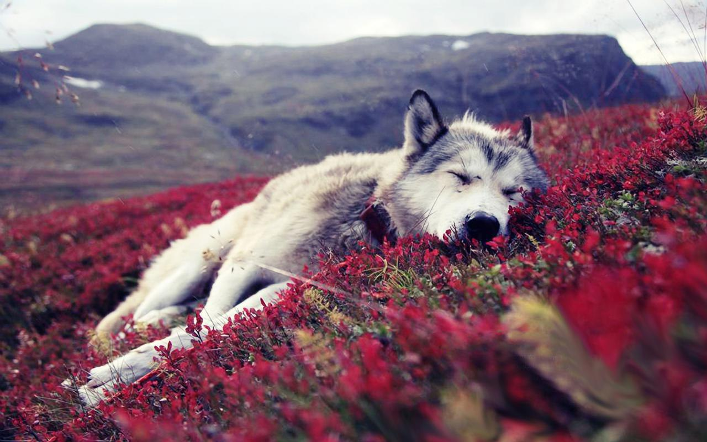
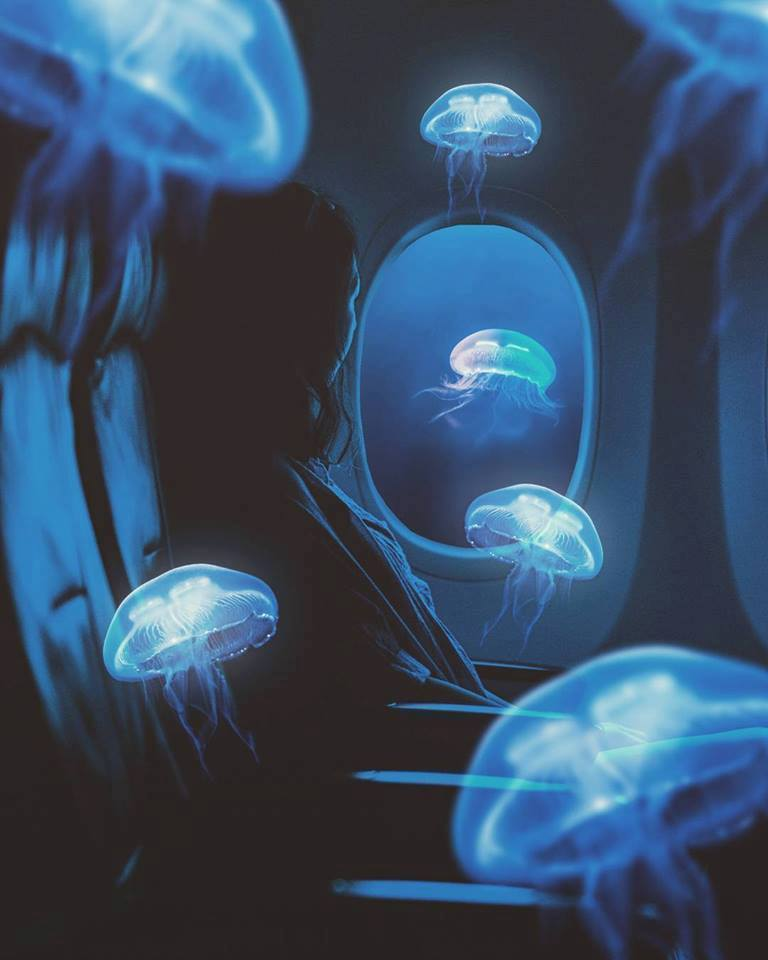

The second

This little cute tumblrish doggie photo is for you so when you
look a it you'd
remember old times, simpler times,
you'd remember a calmer version of yourself. you'd connect with the Haydar in you, the one who found the beauinesss in this picture.
you'd remember a calmer version of yourself. you'd connect with the Haydar in you, the one who found the beauinesss in this picture.
This picture of a busy city is to show you our future because we're gonna live in a place like
this and we're gonna go out in the nights go around eat and enjoy all these neon lights.
Our souls will be the calmest thing in the city.
Our souls will be the calmest thing in the city.


Last and not the least this faceless girl is for you to remember me,
See my face instead, remember me in our planes
in our daily life.
And how i'm always gonna be here and there for you.
See my face instead, remember me in our planes
in our daily life.
And how i'm always gonna be here and there for you.